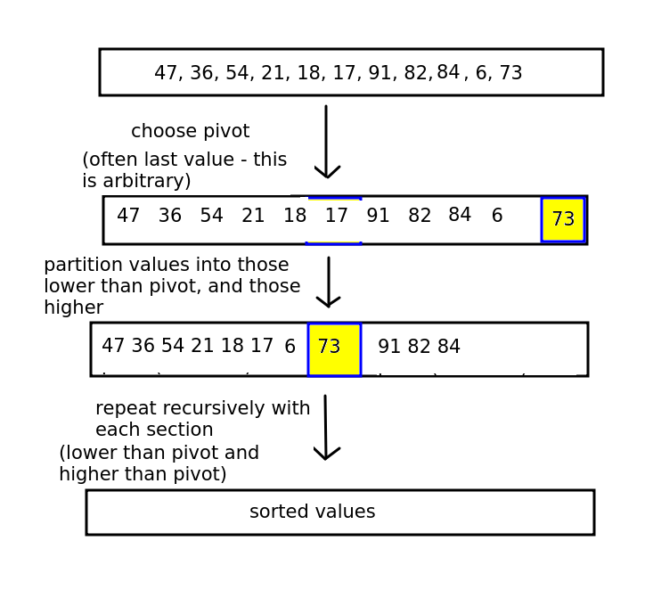
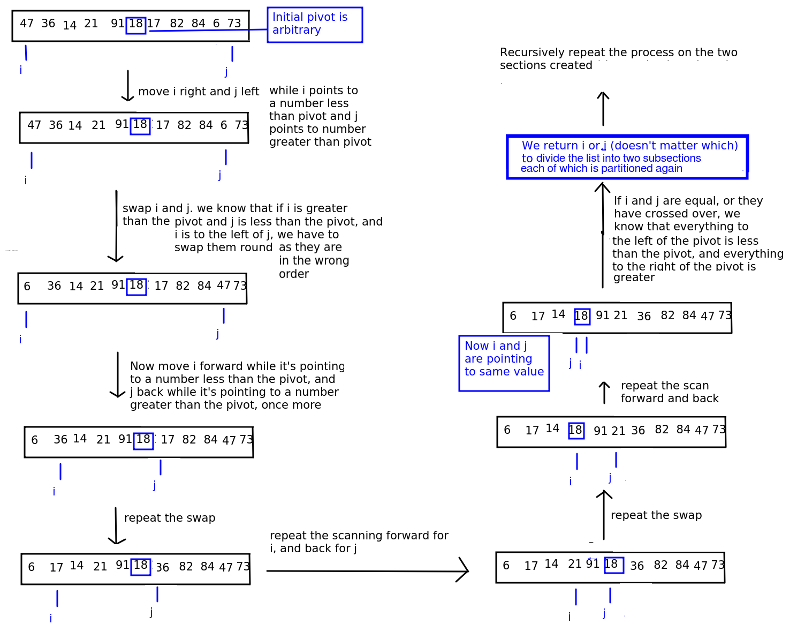
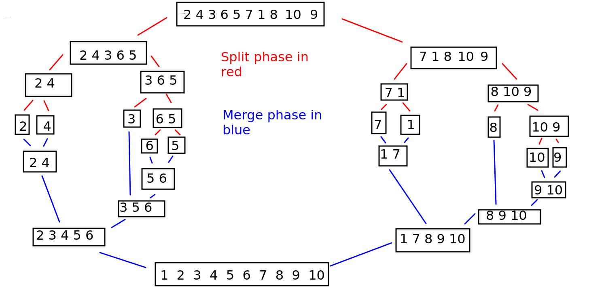

This is a more advanced topic which is not compulsory for passing the assignment, but might be useful for higher marks. It's included here to give those of you who are coping reasonably well with the module an idea on how more advanced and efficient sorting algorithms work.
If you need to catch up with previous weeks, please do this first!
Two weeks ago we covered some basic sorting algorithms, such as bubble sort, selection sort and insertion sort. However, we saw that their efficiency could be better, being O(n^2) in the worst case. This week we will look at two improved sorting algorithms, quicksort and merge sort.
These algorithms use recursion. Please see the trees topic for a reminder on recursion.
Quicksort is the first of the two algorithms. It works by recursively partitioning the list into two sections, or partitions, either side of an element we call the pivot.
An arbitrary element (e.g. the last, the middle, or the first) is picked as the pivot, and then the partitioning phase begins. The aim of the partitioning phase is to rearrange the list so that it all the elements less than the pivot element are to its left, and all elements greater than the pivot element are to its right. To do this, the partitioning phase re-arranges the list, performing a series of swaps so it is ordered correctly.
The general procedure is shown below.

Next stage is to recursively perform the quicksort again on the partition before the pivot, and the partition after the pivot - as the elements in each partition will not be sorted yet, all we know is that the pivot is in the correct place. Each partition will have the algorithm applied to it (so that each parititon will have its own pivot, and the partition will be sorted into the sub-partition less than the partition's pivot, the partition's pivot, and the sub-partition greater than the pivot).
The procedure continues until the entire list is sorted.
This is a very high level overview and the implementation details are not obvious at this stage. We have to consider the partitioning stage (working out which elements are less than, and which greater than, the pivot) in more detail. There are various approaches to this; we will use the Hoare partitioning algorithm.
Described on Wikipedia and cross-checked against various academic sources including this one from Stanford University.
The Hoare algorithm (developed by Tony Hoare) works by having two "fingers"
(term "finger" from notes by Brian Dupée, which were in turn sourced from the site sorting-algorithms.com)
pointing to the start of the list and end of the list. We move the first "finger", referenced by the variable i forwards and the second "finger", referenced by the variable j, backwards, until i points to something GREATER THAN OR EQUAL TO the pivot and j points to something LESS THAN OR EQUAL TO the pivot.
As we move each "finger" forward and back, we test whether any valuse need to be swapped. If the value at i is greater than the value at j, and i is still to the left of j, then we know that the values are in the wrong order and we swap them.
When i and j point to the same element (the pivot) or cross over (j is to the left of i), then we know that we have done all the swaps we can, because i will have scanned all values greater than the pivot which were to the left of the pivot (and have now been swapped), and j will have scanned all values less than the pivot which were to the right of the pivot (and have now been swapped).
We return the new partition point (which will be either j or i - often they will point to the same value) so we can continue the operation recursively.
The algorithm is shown on the diagram below.

The quicksort function then:
The recursion will stop when we have a list section of length 1 as it cannot be partitioned.
Quicksort is rather difficult to figure out from scratch so I will present some Python-like pseudocode of the Hoare algorithm below. This can be found in multiple places on the web including Wikipedia; as always you should always double-check anything on Wikipedia against other sources to check it's accurate.
function hoare_partition(data, start, end)
Let i = start
Let j = end
Let pivot = midpoint of list # this is arbitrary
While true # this will loop forever
Increase i until we find a number equal to or greater than number at pivot position
Decrease j until we find a number equal to or less than number at pivot position
# At this point, the numbers pointed to by i and j will be in the 'wrong'
# part of the list, so swap them, unless i and j are equal or have crossed over,
# in which case we have finished this run
# If i and j haven't crossed over yet, swap the numbers,
# otherwise return i or j to use for the next partitioning
We have covered the Hoare algorithm for sub-partitioning a partition, however it may not be clear how the quicksort algorithm progresses as a whole. In order to implement quicksort, we also need a "master" quicksort function which will recursively call itself in order to recursively sub-partition the list into smaller and smaller partitions. This will take, as parameters, our list, together with indices for the start and end of the current partition. Initially these indices should be set to the start and end of the list. The "master" function should then:
The diagram below shows how, with each run of the Hoare partitioning algorithm, the list is progressively sorted into place.
The complexity of quicksort can be as low as O(n^2) in unusual cases but on average O(n log n)(Khan Academy). The maths behind calculating this complexity is quite advanced but is discussed at length in this article.
Reference: Khan Academy
Merge sort is another more advanced sort which continuously splits the list into equal parts until single elements are produced. For example, a list of length 8 would be split into two parts of length 4, then four parts of length 2, then eight single-item lists. Or, a list of length 10 would be split into two parts of length 5, then each part would be split into two parts of length 2 and 3, then each length 2 part would be split into two parts of length 1 while the length 3 part would be split into one part of length 1 and another of length 2, the latter of which would be split again. This is shown on the diagram below; the split phase is shown by the stages using red lines.

Once a split has happened, the components are recombined in sorted order. So a split of a 2-member part into two 1-member parts would be recombined into a 2-member part, but in sorted order. If a 3-member part was split into 1-member parts and 2-member parts, these would be recombined into a 3-member part, but again in sorted order. So the list gradually reassembles itself into its full length, but this time in sorted order. This is shown on the same diagram above; the merge phase is shown by the stages using blue lines.
How do we merge two parts so that they are in sorted order? The algorithm is as below. Also see Khan Academy for a detailed explanation.
combine(listA, listB):
Set counterA to 0
Set counterB to 0
sorted_list = []
while counterA not beyond end of listA and counterB not beyond end of listB
if listA[counterA] < listB[counterB]
Add listA[counterA] to sorted_list
Increase counterA by 1
else if listB[counterB] < listA[counterA]
Add listB[counterB] to sorted_list
Increase counterB by 1
# At this point we will have added all elements from ONE of the two lists
# to the output list but not the other
if counterA is not beyond end of list A
Add all remaining elements from list A
else if counterB is not beyond end of list B
Add all remaining elements from list B
Return sorted_list
Why does this work? Let's consider merging the two 2-member lists [2 5] and [3 4]. A very important point is that when merging lists, we know that the previous lists will already be sorted from the previous run of the merge algorithm.
Output list = [2 3]
and move the counter for the second list on one place.
Output list = [2 3 4]
At this point, the counter for the second list will be beyond the end of the second list, so the loop exits. However, we still have one member (5) to be considered from the first list, so we add the remainder of the longer list elements (5) to the output list. (It's possible the two lists would be of unequal length, e.g. a 3-member list and a 2-member list; this last stage would also ensure that all un-added members from the longer list would be added)
You will need these functions:
The entire merge sort algorithm is handled with a recursive "manager" function. This recursive function takes a list to be split as a parameter, and:
The complexity of merge sort is O(n log n). See here for a detailed explanation.
Have a go at implementing quicksort in code.
If you finish that, have a go at implementing merge sort according to the description above. Hint: to split a list in two, use code such as the following:
import math
def split_list(data):
length = len(data)
halfway = math.ceil(length/2) # ceil rounds up to nearest integer
return ( data[:halfway], data[halfway:] )